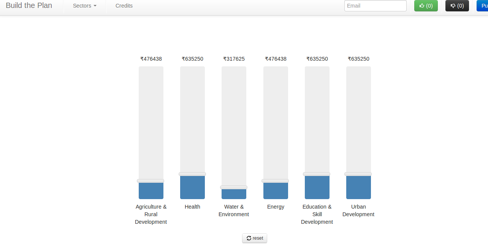

Title : 12th plan Hackathon a report
Posted on Thu 11 April 2013 in community, hackathon, Opendata, social
Planning Commision in Collaboration with NIC especially the Data.gov.in Team ( which is setup according to the NDSAP guildelines) organized a Hackathon to hack the 12th five year plan for those of who are not aware like most of us Five years plans in India are economic blueprints from Planning Commission as to how are are going to spend in Next Five years.
We were at the venue around 11am , when things were still settling down at the Venue IIT Delhi , we were supposed to be connected to the live webconference in the opening ceremony but due to connectivity issues we were able to just watch the broadcast , but being in Delhi it was ok since there were frequent visit by organizers just to check on how things were progressing.
In the whole commotion we sat in a corner and started talking about what to build we were froze on the Build your Plan idea at around 2 Pm and started working on it there were two classrooms 6LT1 and 6LT2 allocated for us to sit and complete the work in the meantime there were announcements and updates presentation from different sectors as to what there expectationswere as to this Hackathon , it was almost 5 Pm by the time others settled down and started the work in the meantime we were done with front end of our application. Sajjadand Ramniquecoded the front end in two session one sitting in Cafe Qahwa . We realized we were not productive enough so we moved back home.
Day two we were all supposed to submit the applications by 12 in the noon and the presentations would be starting from 2 PM , we pushed the submit button just in nick of time with Sajjad Ramnique and Sumandro with a hardly any blink whole night .
First on the block were us Sumandro presented our idea and the Jury was interactive and liked out idea . Here is the link to Build Your App the live application . we hung around the venue till late in the evening till all the presentations were over .
Once the user plays with his allocations he will get different scenarios showing how his plan will look.This he can share with people which they can vote on.
overall the experience has been a positive one with some scope for improvements like the internet connectivity was bad we were using our own 3G phones as access points . Students were not equipped and educated to what was expected from the event. Lots of disturbance with the so called VIP's visiting the venue now and then. No proper place to sleep yes people who hung out at the Venue were defending mosquitoes rather than building something .
Being first one for the Govt it must have been and educational experience , they also need to involve and publicize the event more in the public like they do to there Schemes in the Newspapers.
Team geohackers with Montek
here are some of the moments in pictures and all the winners listed here , i wished they have put the list of all the people no matter how small the effort was because in an event like this everyone benefits and everyone is a winner.